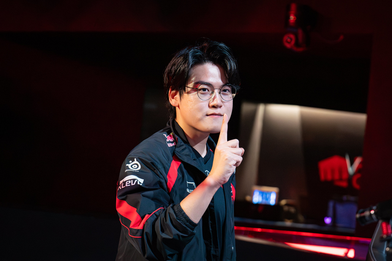
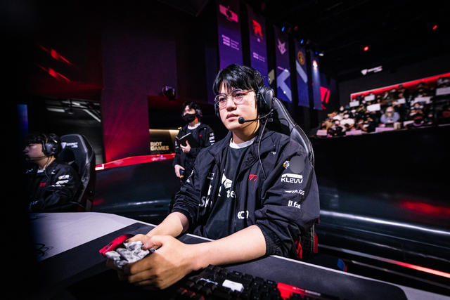
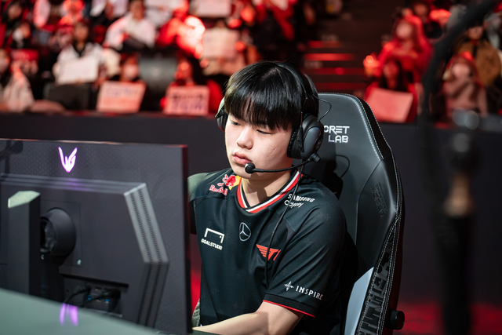

Đây có thể chính là cái tên góp phần khiến T1 bùng nổ drama như hiện tại
Giữa dòng drama T1, một cái tên có thể đã góp phần khiến nhà vô địch CKTG 2024 có những nước đi như hiện tại.
Drama T1 như hiện tại, một tuyển thủ cũng "góp phần"
Trong những ngày drama T1 - Gumayusi còn đang nóng hổi và vừa có thêm những diễn biến mới, một trong những cái tên được nhắc nhiều nhất chính là Zeus. Theo nhiều ý kiến, Zeus ra đi là chính xác khi thượng tầng T1 đang cho thấy sự bất cập trong cách đối xử với tuyển thủ. Nhưng có thể chính việc Zeus ra đi đã tác động tạo nên drama này.
Cụ thể, từ trước đến nay, gần như chưa từng có tiền lệ nào về một màn ra đi vội vàng và đầy drama như T1 - Zeus, nhất là trong lịch sử đội tuyển này. Tất nhiên, mỗi bên đều có lí lẽ riêng và việc T1 hướng dư luận vào Zeus cũng khó chấp nhận. Nhưng rõ ràng, T1 có quyền và đã thực hiện các biện pháp để không có một "Zeus thứ hai" trong tương lai.

Và cái tên được "xướng lên" để T1 có thể dùng để đề phòng các vụ việc tương tự Zeus, chính là Gumayusi. Nhìn rộng ra, Xạ Thủ sinh năm 2002 hoàn toàn đầy đủ các "tố chất" để Ban lãnh đạo T1 chọn làm "tế thần": tuyển thủ xuất thân từ lò đào tạo T1, có lượng fan đông bậc nhất đội (chỉ sau Faker và có lẽ trước đây là cả Zeus), tài năng đã được chứng minh, có cá tính riêng và cái tôi cao. Một điều quan trọng: Gumayusi từng được định hướng sẽ là visual mới của T1 trong tương lai.
Chính vì vậy, không phải Oner (tuyển thủ thường trồi sụt phong độ và cũng ít khi thể hiện cái tôi quá mức) hay Keria (một tuyển thủ quá "lành tính"), Gumayusi sẽ vô cùng phù hợp để T1 chuẩn bị cho những ai muốn lặp lại "con đường" của Zeus. Hợp đồng 1+1 của Gumayusi vừa hợp lý để tuyển thủ này có thể có những lựa chọn tương lai, vừa đủ để T1 không bị rơi vào thế bị động.
Việc đôn Smash lên là nước đi có phần "hơi quá tay" của T1
T1 thực chất chưa cần đôn Smash lên quá vội vàng. Tuyển thủ này căn bản trong xuyên suốt cả mùa 2024 chưa thể hiện quá nổi bật. Thành tích top 4 Challengers có công đóng góp không nhỏ của Rekkles - Siêu Xạ Thủ LEC và những cái tên khác, ví dụ như Poby - người đã có thời gian "du học" ở LCK.
Rõ ràng, Smash cũng đã cho thấy vị trí ở đội 1 thay Gumayusi là quá sức với anh. Để giờ đây, vì những sai lầm của thượng tầng, Xạ Thủ trẻ tuổi này đã phải chịu những áp lực có thể nói là quá sức cho một tân binh. Thậm chí, có thể hủy hoại sự nghiệp của Smash nếu T1 có kết quả không tốt ở mùa giải này.
Việc T1 tránh các trường hợp tương tự Zeus là chuyện dễ hiểu với một tập đoàn kinh doanh. Nhưng những sự vội vàng sau đó, cùng cách xử lý bất hợp lý lại đang khiến những nỗ lực của T1 phản tác dụng còn các tuyển thủ và khán giả là những người chịu thiệt hại nặng nhất.